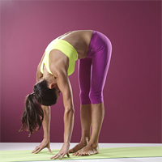

Leg Exercises

Stand with feet hip-width apart and hinge forward at the hips.
Keep your knees slightly bent, lay the chest on your upper thighs, and let your head fall forward toward the ground.
Keep the quads engaged and slowly work to straighten the legs without locking the knees.
Hips should stay centered over the feet.
Hold for 5-8 slow and deep breaths.